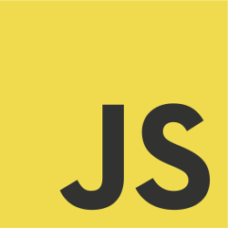
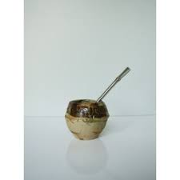

Experiencias!
-
Java
Creando proyectos en Java desarrolle una parte logica la cual es fundamental a la hora de resolver ejercicios. En este lenguaje aprendi a llevar a cabo proyectos grandes, como la realizacion de una mapa de bits Un proyecto acerca de la correccion de lenguaje html. Ademas de aprender las buenas practicas de programcion y la utilizacion de diferentes FrameWorks para este lenguaje. -
PHP
PHP es un lenguaje de programcion orientada a la parte web, en este lenguaje he hecho diferentes Proyectos tanto de manera indivual como en equipo. Una de las ventajas de realizar proyectos que se despliegan en ambientes web son la adaptabilidad en dispositivos -

JS
Con poco tiempo dentro de este lenguaje, he encontrado es que pueden existir proyectos lo cuales unicamente puedan escribirse en JS tanto el front-end como el back-end. Ademas de sus grandes y potentes herramientas que este trae.
-
MySql
MySql es un lenguaje de consultado estructurado para el motor de base de datos SQL, dentro de este se pueden realizar la consulta de informacion al momento de solicitarla ya sea tanto para App de escritorio, web o movil. -

AngularJS
AngularJS es un FrameWorks de JavaScript para el desarrollo front-end de una app, este trae potentes herramientas las cuales son muy utiles al momento de desarrollar; ademas de contar con su propio grupo de estructuras de directivas, servicios, etiquetados entre otros. -

Mate Argentino
Para preparar un mate cebado, se coloca la yerba en un recipiente llamado mate o calabaza, hasta las tres cuartas partes del mismo. Luego se tapa con la mano, se coloca boca abajo y se lo agita (esto hace que las partículas más finas queden en la parte superior, y no obstruyan la bombilla). Se lo coloca nuevamente boca arriba y se le agrega un poco de agua tibia o fría cerca del borde. Se deja reposar algunos segundos (hasta que se absorba el agua) y se termina de llenar con agua caliente